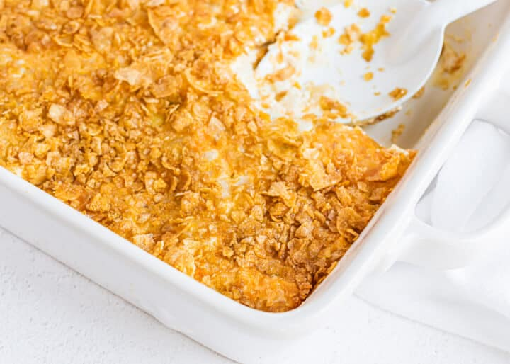

Edie's Cheesy Potatoes

Description
These are Aunt Edie's cheesy potatoes. It comes together pretty easily, and is very nice. The potatoes are soft and creamy, but the crunchy top really makes it special.
I've never prepared it myself but I've eaten it several times with gleeful abandon.
Ingredients
- Two 2lb packages of shredded hash browns
- Two cans cream of chicken soup
- 1 1/2 cups sour cream
- 1 stick of butter
- 1 tsp each salt and pepper
- 1 chopped medium onion
- 2 cups shredded cheese
- french fried onions
Steps
- Combine all except french fried onions ingredients into a crockpot
- Top with french fried onions
- Cook for 5 hours on high